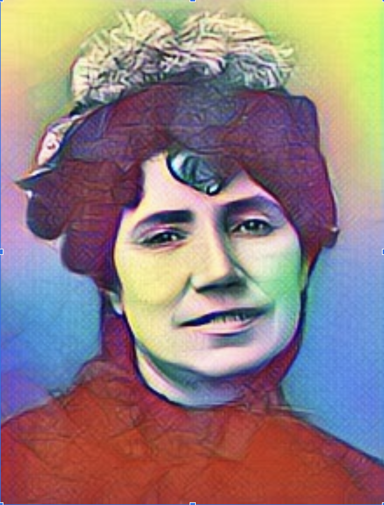

Filoginia - Antología escolar de escritoras hispánicas contemporáneas
Rosalía de Castro
Retrato de Rosalía
Adriana Ramos. Retrato de Rosalía de Castro(CC BY-SA)
Adriana Ramos. Retrato gráfico de Rosalía(CC BY-SA)
Rosalía de Castro, por Adriana Ramos
Su nombre es María Rosalía de Castro Gonzalez. Nació el 24 de febrero del 1837 y falleció el 15 de Julio del 1885 por cáncer uterino. Era católica y de nacionalidad española. Su marido se llamaba Manuel Murguía y su hijo Ovidio Murguía de Castro. Ella era escritora y poeta (Romanticismo). Géneros: poesía, novela y cuentos.
Obras notables: Cantares gallegos, Follas novas, La hija del mar y Lieders.
Adriana Ramos. Rosalía De Castro, La hija del mar(CC BY)
Introducción
Rosalía de Castro era una poetisa y novelista que defendía el feminismo en sus novelas. Yo he leído La hija del mar, que trata sobre Teresa (personaje principal), cuyo novio Ansot la deja embarazada y la abandonó con 18 años. Su hijo falleció y unos marineros se encontraron a una niña en el mar llamada Esperanza que al final se la quedó Teresa y la amo como una hija suya. Ansot después de 13 años se presentó en casa de Teresa diciendo que se quedaba con ella, Teresa lo amaba y no le podía decir que no. Él quiso abusar de Esperanza y al final resulta que Teresa no quería que a Ansot lo mataran; pero, de todas maneras, le descubrieron.
Lectura
Se extrae del capítulo 8, llamado "Alberto" (Alberto Ansot).
Los últimos rumores de la tormenta se escuchaban todavía mezclados al murmullo de las olas y al graznido de los cuervos que en inmensas bandadas remontaban su vuelo y se escondían tras los últimos vapores que cubrían el azul del cielo.
La arena, húmeda aún por la lluvia, exhalaba ese aroma fresco y penetrante de las marinas que rejuvenece los ánimos; y el silencio de la playa, interrumpido por músicas alegres y risotadas estrepitosas, parecía haberse alejado con ligero paso de aquel lugar en que había gozado largos días de calma y de reposo.
Un elegante y ligero vapor se mecía blandamente sobre las aguas cercano a la orilla, con las airosas velas caídas lánguidamente a lo largo de los palos, cual si se hubiesen rendido al cansancio y a la fatiga, las azules banderas húmedas y agitadas apenas por una leve brisa que parecía despreciarlas porque no eran ya hermosas, y desierta la cubierta, cual si sus gentes quisieran dejarle en reposo, sobre el lecho inquieto en que tan valerosamente acababa de combatir. Semejaba en aquellos instantes pájaro de lejanos climas que cansado en su rápido vuelo desciende hasta las olas para tomar descanso sobre ellas.
El silencio más profundo reinaba en su interior, en tanto que multitud de marineros esparcidos en numerosos grupos por la playa, con las ropas húmedas y ajadas, desgreñado el cabello y el sudor de la fatiga no enjuto aún en sus morenos rostros, parecían querer olvidar en el bullicio y el placer de unos instantes el peligro que acababa de amenazar su existencia, siempre combatida y expuesta al furor de los elementos.
El soplo de alegría que rodaba sobre la playa les prestaba la vida y animación de los seres felices y, ahuyentando de su memoria los malos recuerdos, iluminaba las tinieblas en que se hallaban sumidas aquellas almas y las acariciaba en cuanto encierran de hermoso las imágenes del olvido.
Conclusión
Desde mi punto de vista Rosalía intenta enseñar o mejor dicho demostrar cómo era la vida de las mujeres dentro de sus casas, que estaban totalmente dominadas por los hombres. Con este libro me he dado cuenta de lo que ha mejorado el tema del machismo y lo que todavía queda por recorrer.